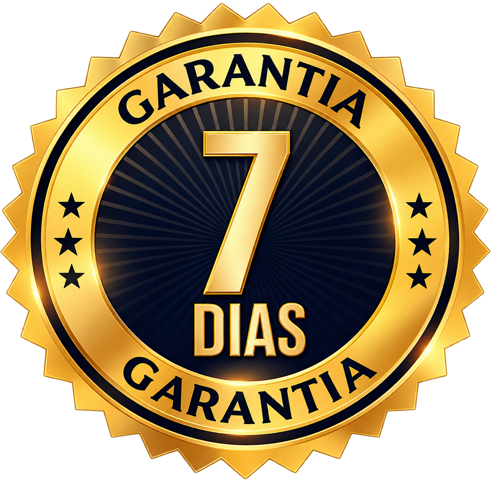

PRIMEIRO MOMENTO
✧
Reconhecer
Olhar para o vínculo que marcou sua história, reconhecer o que foi vivido e acolher a decisão de começar a deixar essa experiência para trás.
Se você viveu uma relação com alguém de comportamento tóxico ou manipulador e sente que ainda existe um vínculo que precisa ser encerrado, o Divórcio Energético é para você.
Você decidiu encerrar o contato porque aquela relação não fazia bem. Ainda assim, as lembranças permanecem.
Você revive conversas, sente saudade em alguns momentos ou ainda tem sentimentos difíceis de organizar?
Mesmo querendo seguir em frente, parece que uma parte de você continua presa ao que aconteceu.
Agora imagine reservar um momento para reconhecer tudo o que viveu e expressar sua decisão de deixar esse vínculo para trás.
Uma oportunidade de olhar para essa história com outra perspectiva, simbolizar o encerramento desse ciclo e direcionar sua atenção para suas próprias escolhas.
UM NOVO OLHAR PARA A SUA HISTÓRIAVocê pode começar a construir uma relação diferente com as lembranças dessa experiência, dando espaço para novos caminhos e para aquilo que deseja viver daqui para frente.
O Divórcio Energético é uma experiência guiada por Cláudia, criada para quem deseja simbolizar o encerramento de um vínculo com alguém que marcou sua história de maneira dolorosa.
A proposta parte da ideia de que algumas conexões continuam sendo sentidas mesmo depois que uma relação termina.
Você será conduzida por uma experiência que envolve intenção e um gesto de separação.
No momento central, uma fita ou um laço representa o vínculo que você deseja encerrar. Com a orientação de Cláudia, você terá a oportunidade de realizar o corte, representando a separação dos caminhos e a decisão de deixar cada pessoa com aquilo que lhe pertence.
VOCÊ PODERÁ UTILIZAR UMA TESOURA, CASO DESEJE. O MAIS IMPORTANTE É A INTENÇÃO COLOCADA NESSE MOMENTO.

Olhar para o vínculo que marcou sua história, reconhecer o que foi vivido e acolher a decisão de começar a deixar essa experiência para trás.
Simbolizar a separação, expressar sua intenção de encerramento e deixar cada pessoa com aquilo que lhe pertence, seguindo caminhos distintos.
Direcionar sua atenção para si, suas escolhas, sua confiança e para os caminhos que deseja construir daqui para frente.
SEU ACESSO INCLUI
Ao adquirir o Divórcio Energético, você receberá:
Cláudia apresenta a proposta dos vínculos invisíveis e prepara você para realizar a experiência.
Uma orientação guiada para o momento de encerramento, em que você será conduzida pelas palavras e pela intenção de separação.
A experiência simbólica do corte do laço, utilizando uma fita ou um laço para representar o vínculo que deseja encerrar.
O PROCESSO FOI PENSADO PARA QUE VOCÊ ACOMPANHE AS ORIENTAÇÕES E REALIZE A EXPERIÊNCIA NO SEU PRÓPRIO RITMO.
Você terá acesso à experiência e aos dois áudios complementares para realizar esse processo no seu próprio ritmo.
PAGAMENTO ÚNICO
ACESSO À EXPERIÊNCIA + 2 ÁUDIOS COMPLEMENTARES
VOCÊ AINDA RECEBERÁ DOIS
BÔNUS 01
Um áudio guiado para acompanhar suas reflexões após a experiência e ajudar você a olhar para os vínculos e padrões que deseja deixar para trás.
BÔNUS 02
Um áudio de fortalecimento para cultivar sua confiança, valorizar suas escolhas e direcionar sua atenção para si mesma.

VOCÊ TEM 7 DIAS PARA CONHECER A EXPERIÊNCIA
Se decidir que ela não é para você, poderá solicitar o reembolso dentro desse prazo, conforme as condições da garantia.
UMA NOVA ETAPA COMEÇA COM ESSA DECISÃO
O Divórcio Energético é um convite para reservar um momento a esse encerramento, reconhecer o que ficou para trás para assim, seguir outro caminho.
AINDA TEM DÚVIDAS?
Não. A experiência é guiada por Cláudia, que conduzirá você pelas etapas do processo. Não é necessário ter realizado algo semelhante anteriormente.
Isso não impede você de realizar a experiência. Lembrar de alguém com quem compartilhou parte da sua vida é natural. A proposta é oferecer um momento para simbolizar o encerramento desse vínculo e expressar sua intenção de seguir em frente.
O Divórcio Energético é uma experiência espiritual e simbólica de encerramento. Não existe promessa de apagamento de lembranças ou de desaparecimento imediato dos sentimentos. Cada pessoa vivencia esse processo de maneira diferente.
Sim. Você poderá acompanhar o conteúdo no seu próprio ritmo, escolhendo um momento tranquilo para realizar a experiência e ouvir os áudios complementares.
Você terá sete dias para conhecer a experiência e, caso decida que ela não é para você, poderá solicitar o reembolso dentro desse prazo, conforme as condições da garantia.